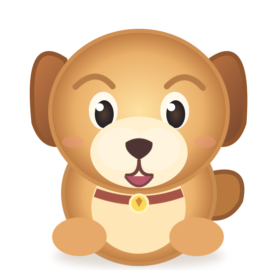

🐶 Pati Bakım Merkezi · 3D

2D güvenli görünüm3D açılamadı; görevleri düğmelerle yapabilirsin.Pati'yi yıkayalım!⭐ 0/3
Bakım aracını seç.
Süngere dokun. Hata yaparsan ceza yok!

2D güvenli görünüm3D açılamadı; görevleri düğmelerle yapabilirsin.Süngere dokun. Hata yaparsan ceza yok!